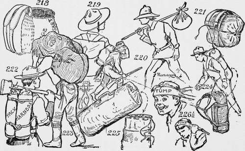

Man Packing
Description
This section is from the book "The Book Of Camp-Lore And Woodcraft", by Dan Beard. Also available from Amazon: The Book of Camp-Lore and Woodcraft.
Man Packing
When you, my good reader, get the pack adjusted on your back and the tump line across your forehead (Fig. 226), remember that you are being initiated into the great fraternity of outdoor people. But no matter how tough or rough you may appear to the casual observer, your roughness is only apparent; a boy or man of refinement carries that refinement inside of him wherever he goes; at the same time when one is carrying a pack on one's back and a tump line on one's forehead (Fig. 226 1/2), or a canoe on one's head, even though a lady should be met on the trail it would not be necessary for one to take off one's hat, for even a foolish society woman would not expect a man to doff the canoe he might be carrying on his head. Under all circumstances use common sense; that is the rule of the wilderness and also of real culture.
The most important thing that you must learn on the trail is not to fret and fume over trifles, and even if your load is heavy and irksome, even though the shoulder straps chafe and the tump line makes your neck ache
Don't Fight Your Pack
When we speak of "fighting the pack" we mean fighting the load; that does not mean getting one's load up against a tree and punching it with one's fists or "kicking the stuffings out of it," but it means complaining and fretting because the load is uncomfortable.
There are two kinds of "packs"—the pack that you carry day after day on a long hike, and the pack that you carry when on a canoe trip and you are compelled to leave the water and carry your canoe and duffel overland around some bad rapids or falls. The first-named pack should be as light as possible, say between 30 and 40 pounds, for on a long tramp every pound counts, because you know thai you must carry it as long as you keep going, and there is no relief in sight except when you stop for your meals or to camp at night. But the last-named pack, the
Portage Pack
Figs. 218 and 223, the kind that you carry around bad pieces of water, may be as heavy as you can, with safety, load upon your sturdy back, because your mind is buoyed up by the fact that you know you will not have to carry that load very far, the work will end when you reach the water again, and— strange to say—the mind has as much to do with carrying the load as the muscles. If the mind gives up you will fall helpless even under a small load; if the mind is strong you will stagger along under a very heavy one.
When I asked a friend, who bears the scars of the pack straps on his body, how it was that he managed to endure the torture of such a load, he replied with a grin that as soon as he found that to "fight his pack" meant to perish—meant death!—he made up his mind to forget the blamed thing and so when the pack wearied him and the straps rubbed the skin off his body, he forced himself to think of the good dinners he had had at the Camp-fire Club of America, yum! yum! Also, of all the jolly stories told by the toastmaster, and of the fun he had had at some other entertainments. Often while thinking of these things he caught himself laughing out loud as he trudged along the lone trail, Forgetting the hateful pack on his back. "In this way," said he, with a winning smile upon his manly and weather-beaten face, "I learned how not to fight the pack but to FORGET IT! Then he braced himself up, looked at the snow-capped mountain range ahead, hummed a little cowboy song and trudged on over the frozen snow at a scout's pace.
Details Of Man Packs
Now that you know what a pack is, and what "fighting a pack" means, remember that if one's studies at school are hard, that is one's pack. If the work one is doing is hard, difficult or tiresome, that is one's pack. If one's boss is cross and exacting, that is one's pack. If one's parents are worried and forget themselves in their worry and speak sharply, that is one's pack. Don't fight your pack; remember that you are a woodcrafter; straighten your shoulders, put on your scout smile and hit the trail like a man!
If you find that you are tempted to break the Scout Law, that you are tempted at times to forget the Scout Oath, that because your camp mates use language unfit for a woodcrafter or a scout, and you are tempted to do the same, if your playmates play craps and smoke cigarettes, and laugh at you because you refuse to do so, so that you are tempted to join them, these temptations form your pack; don't give in and fall under your load and whimper like a "sissy," or a "mollycoddle," but straighten up, look the world straight in the eye, and hit the trail like a man!
Some of us are carrying portage packs which we can dump off our shoulders at the end of the "carry," some of us are carrying hiking packs which we must carry through life and can never dump from our shoulders until we cross the Grand Portage from which no voyagers ever return. All our packs vary in weight, but none of them is easy to carry if we fret and fume and complain under the load.
We outdoor folks call our load "pack," but our Sunday School teachers sometimes speak of the pack they bear as a "cross." Be it so, but don't fight your pack.
Continue to: